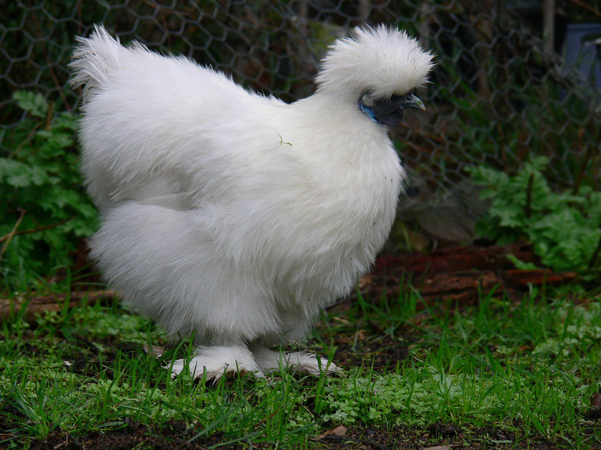
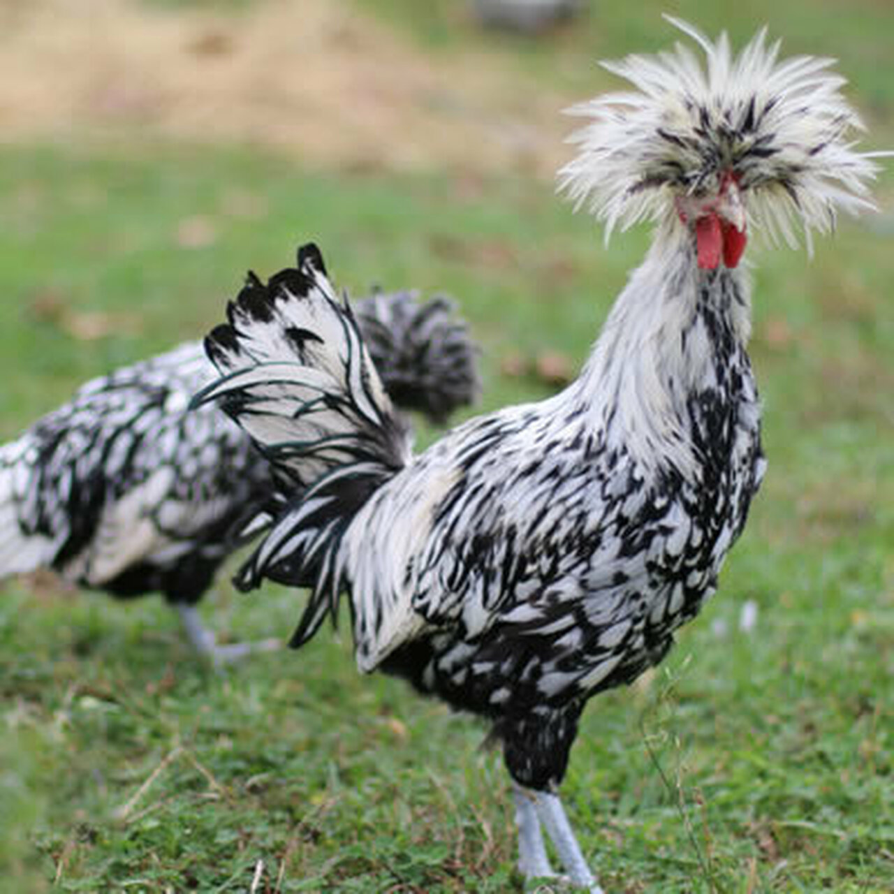
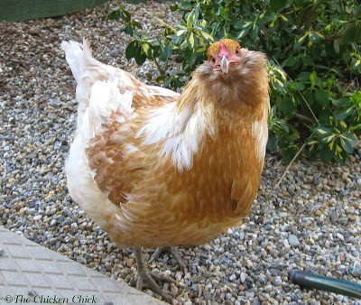

420 < 666 > 420 ♠ ♥ ♣ ⋄
Chicken
A happy old hen met a discontented duck.
Cluck! cluck! Quack! quack! quack!
Said she "I always have the very worst of luck.
Quack! quack! quack!"
Said she, "Of happiness I never lack!
Cluck! cluck! cluck!"
This will zip us on over to the about me page

The chicken (Gallus gallus domesticus) is a domesticated subspecies of the red junglefowl originally from Southeastern Asia. Rooster or cock is a term for an adult male bird, and younger male may be called a cockerel. A male that has been castrated is a capon. An adult female bird is called a hen and a sexually immature female is called a pullet.
Originally raised for cockfighting or for special ceremonies, chickens were not kept for food until the Hellenistic period (4th–2nd centuries BC).[1][2] Humans now keep chickens primarily as a source of food (consuming both their meat and eggs) and as pets.
Terminology
An adult male is a called a 'cock' or 'rooster' (in the United States) and an adult female is called a 'hen'.
Other terms are:
- 'Biddy:' a newly hatched chicken
- 'Capon:' a castrated or neutered male chicken
- 'Chick:' a young chicken
- 'Chook' /tʃʊk/: a chicken (Australia, informal)
- 'Cockerel:' a young male chicken less than a year old
- 'Pullet:' a young female chicken less than a year old.[17] In the poultry industry, a pullet is a sexually immature chicken less than 22 weeks of age.
- 'Yardbird:' a chicken (southern United States, dialectal)
"Chicken" was originally a term only for an immature, or at least young, bird. [when?] However, thanks to its usage on restaurant menus, it has now become the most common term for the subspecies in general, especially in American English. In older sources, 'chicken' as a species were typically referred to as 'common fowl' or 'domestic fowl'.[20]
'Chicken' may also mean a 'chick' (see for example Hen and Chicken Islands)
Etymology
General biology and habitat
BREEDS!
- Silkie
- Benny 
- Polish
- Pompo 
- Easter Egger
- Jiggles 
I am a BIG fan of H20
1/2 + 1/2 = 1